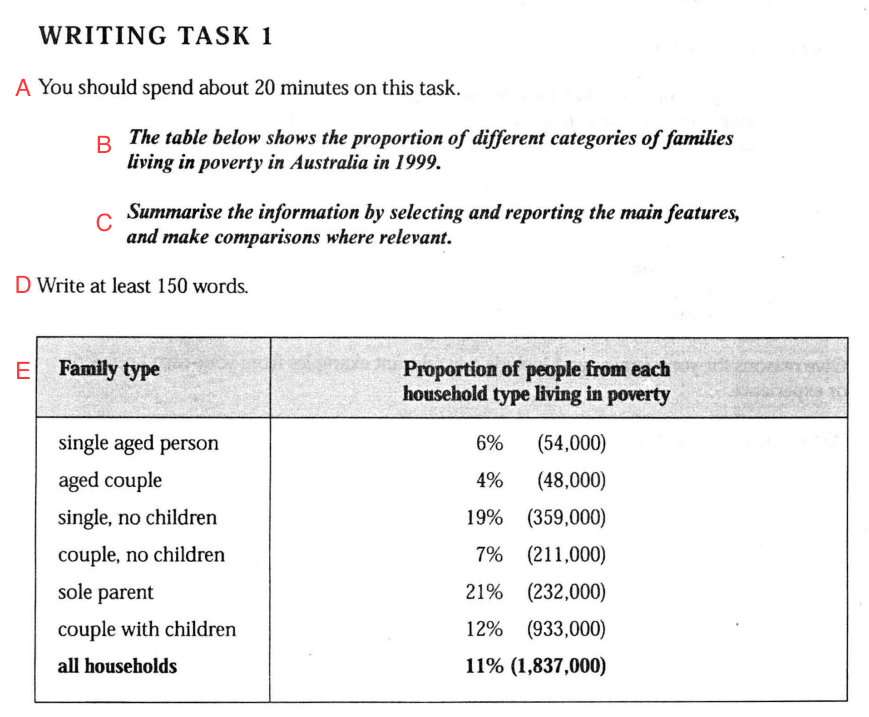
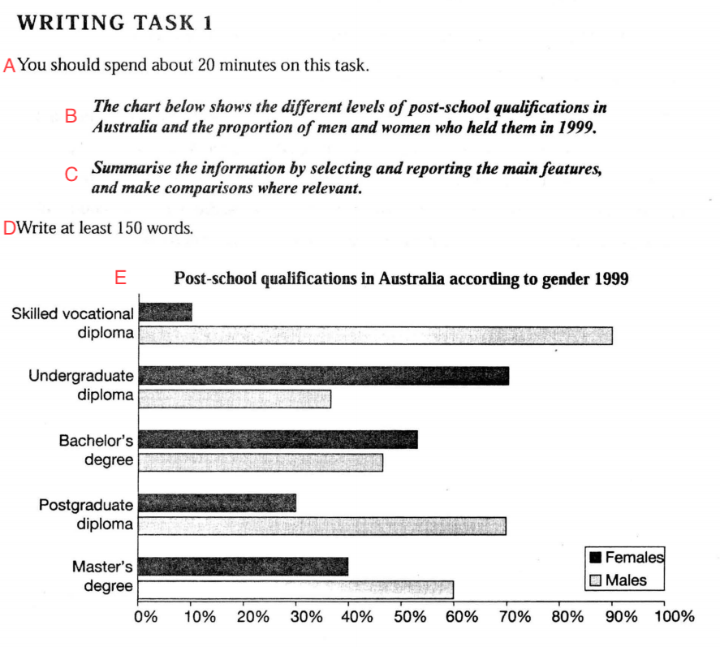

Understanding the format, timing, and requirements of IELTS Writing Task 1
1
Sample Task 1 Questions
Below are two authentic IELTS Writing Task 1 questions. Study them carefully — you will need to answer questions about their structure and components.

Sample 1: Table (Family poverty in Australia)

Sample 2: Bar Chart (Post-school qualifications by gender)
2
Comprehension Check
1
By comparing the two questions, we can see that every Task 1 question contains 5 parts. They are A, B, C, D and E.
The parts that do not change from question to question are
.
The parts that change with each question are
.
Answers: A, C, D | B, E
Parts A ("You should spend about 20 minutes"), C ("Summarise the information…") and D ("Write at least 150 words") stay the same in every Task 1 question.
Parts B (the topic sentence describing the visual) and E (the visual itself — table, chart, graph, etc.) change with each question.
2
Match the following descriptions with the correct part (A, B, C, D or E).
Description
Part
2.1 It tells you the minimum number of words you must write.
2.2 It is where the visual information (graph, table, chart, etc.) is presented.
2.3 It tells you how much time you should spend on the task.
2.4 It introduces the topic of the visual information.
2.5 It gives you the writing instructions.
Answers:
2.1 D — "Write at least 150 words."
2.2 E — The visual data (table, chart, graph, etc.)
2.3 A — "You should spend about 20 minutes on this task."
2.4 B — Introduces what the visual is about
2.5 C — "Summarise the information..."